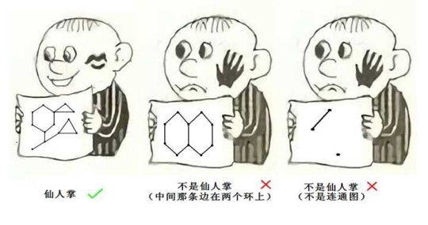
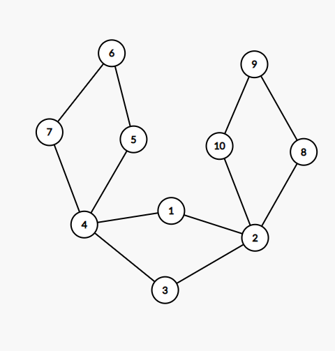
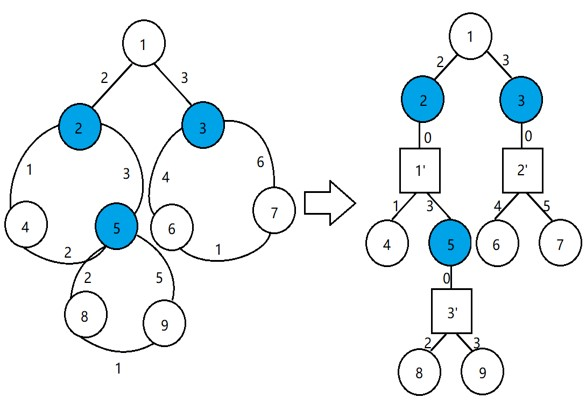
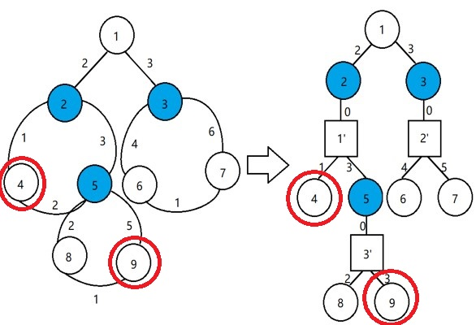
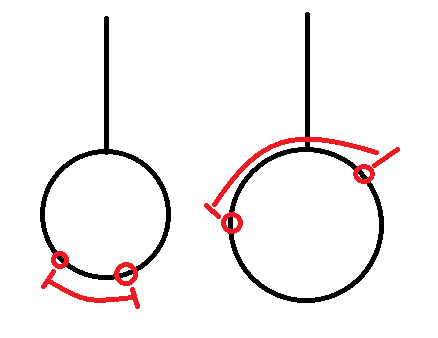

emm，由方点和圆点组成的树。(命名鬼才)
前置芝士
仙人掌图
仙人掌图是一个无向连通图
仙人掌图上的任意边都至多存在于一个环里

为什么叫仙人掌图你自己画出来就知道了

进入正题
什么是圆♂方树?

圆方树就是一个用树来表达仙人掌的一种方式(方表示环,圆表示点)
对于一个环,我们定义一个根,作为从原图根(已指定)节点DFS下来遇到的第一个这个环上的节点
那么这个节点就是这个环在圆方树上的爸爸,而这个环上的其他节点则是这个环在树上的儿子
emm,就这样

怎么建圆♂方树?
well,观察一下:
—一个环就是一个联通分量
—一个联通分量里有且只有一个环
—每一个联通分量都是一个点双联通分量
很美妙的性质,似乎每一条性质都将我们引向一个毒瘤老爷子
但是这明显不是一个简单的tarjan(tbyangz:哪里不简单了)
—首我们仍按照正常tarjan跑,当我们找到了一个联通分量的时候,这就是个环了
—这个时候我们正处在的点,就是该环的环根了 (想想为什么)
—新建一个方点并把当前找到的联通分量中的所有点都与之连边(保留原编号)
—另外,如果搜到自己儿子与自己不在同一个联通分量中,就从自己向儿子连边(作圆方树边)
就酱
1 | ll n,m,q,ff,tt,le,N,dfn[maxn],low[maxn],tot,h[maxn],cnt=1,H[maxn],Cnt; |
其实确实挺简单的对吧
如何使用圆♂方树?
掌上最短(长)路
例题:luogu P5236-静态仙人掌
题目描述:
给你一个有nn个点和mm条边的仙人掌图，和qq组询问
每次询问两个点u,vu,v，求两点之间的最短路。
输入:
第一行三个正整数$n,m,q$意义如题目描述。
接下来$m$行，每行三个正整数$u,v,w$表示$u,v$之间有一条权值为$w$的无向边。
然后$q$行，每行两个正整数$u,v$询问$u$到$v$的最短路。
输出:
$q$行，每行一个正整数，对应一次询问的结果。
数据范围
$1≤n,q≤10000$
$1≤m≤20000$
$1≤w≤10^9$
思路分析:
暴力?
呵呵。
SPFA&Dijkstra?
$O(nm)$的时间,你要是i9-9900k的话你跑得过去我没话说,可惜你不是.
还能怎么做?
冷静分析一波,这道题基本上时间要求$O(n log(m))$之类的神奇东西
然鹅,最短路能到$O(nlog(m))$的也就只有LCA了
不可做不可做
等等
仙人掌?
LCA?
圆方树啊!!!
:)
圆方树上LCA
其实说出来就没什么好讲的了
实际上有:
—DFS确定每个点的爸爸
—预处理计算出ST数组
—回答询问
还有一个神奇的坑点(实际不坑):
当两个点的LCA是方点时,你需要特判最后两个点的距离
For example:


也就是两个换上的点之间的路径从上走还是从下走
1 |
|
码风略丑,别介意
掌上DP
例题:luogu P4410-无归岛
题目描述:
Neverland是个神奇的地方，它由一些岛屿环形排列组成，每个岛上都生活着之中与众不同的物种。
但是这些物种都有一个共同的生活习性：对于同一个岛上的任意两个生物，他们有且仅有一个公共朋友，即对同一岛上的任意两个生物a和b有且仅有一个生物c既是a的朋友也是b的朋友，当然某些岛上也可能会只有一个生物孤单地生活着。
这一习性有一个明显的好处，当两个生物发生矛盾的时候，他们可以请那个唯一的公共朋友来裁决谁对谁错。 另外，岛与岛之间也有交流，具体来说，每个岛都会挑选出一个最聪明的生物做代表，然后这个生物与他相邻的两个岛的代表成为朋友。
不幸运的是，A世界准备入侵Neverland，作为Neverland的守护者，Lostmonkey想知道在一种比较坏的情况下Never的战斗力。因为和朋友并肩作战，能力会得到提升，所以Lostmonkey想知道在不选出一对朋友的情况下Neverland的最大战斗力。即选出一些生物，且没有一对生物是朋友，并且要求它们的战斗力之和最大。
输入:
第一行包含用空格隔开的两个整数n和m，分别表示Neverland的生物种数和朋友对数。
接下来的m行描述所有朋友对，具体来说，每行包含用空格隔开的两个整数a和b，表示生物a和生物b是朋友（每对朋友只出现一次）。第m+2行包含用空格隔开的n个整数，其中第i个整数表示生物i的战斗力A.
输出:
仅包含一个整数，表示满足条件的最大战斗力.
数据范围:
输入数据保证$4≤n≤100000,1≤a,b≤n,1≤m≤200000,−1000≤Ai≤1000。$
思路分析:
算法分析:
实际上呢,这个就是一个带权最大独立集
SO->DP!!
问题来了,这DP个鬼啊,不是树啊啊啊
冷静,冷静
我们需要一棵树,但是仙人掌可以用圆方树转为树
欢乐地DP!!!
[pic 欢乐]
首先是状态:
我们肯定需要一维点对吧,但是一维明显很难维护所以我们就需要第二维->当前点取与不取
$ f[x][0/1]: $点x的子树中取$(1)$或不取$(0)$x时最大独立集的权值
然后是状态转移方程
那么对于原点:
而对于方点,我们还需要一个环上辅助DP:
这里我们分取环根与不取环根两种情况讨论,但他们的状态转移方程是一样的
这里将所有的环上节点存入了代表这个环的$vector$
所以这里的$i$是在枚举$vector$中元素时用的指针
而$v$则是$vector$中第$i$个元素代表的点的编号
So, that’s it!
1 |
|
后话
这是这个博客的第一篇完整的题解
希望这个博客能够推动我的OI之路走的更远,更高!
(撒花)
日常推荐壁纸(我自己p的):[pic shiny mountain]